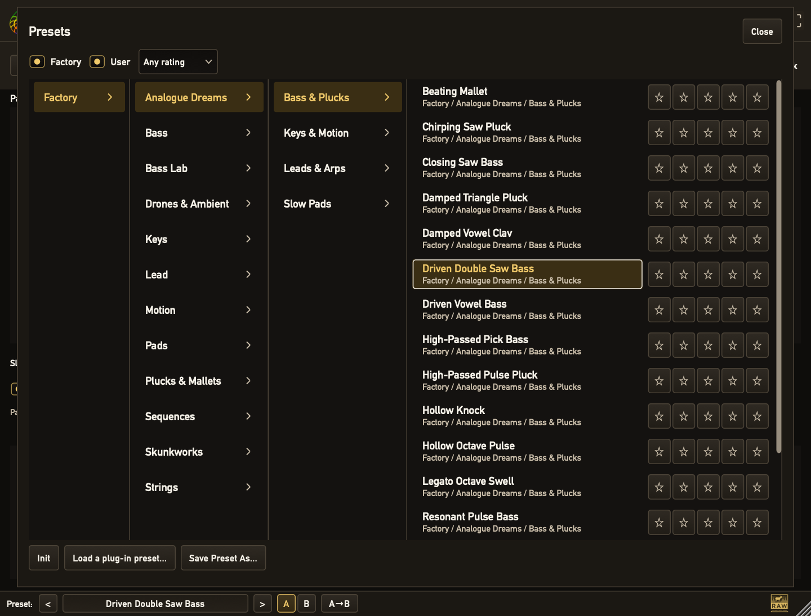

Play the partials
Shape how the sound responds with filter key tracking, velocity, polyphonic glide and unison. With MPE, pressure moves the level and slide moves the filter. Turn up Vintage for the slow pitch wander of tape.

A fresh take on
additive synthesis.
Start with a preset, or drop in a sample and turn it into an instrument. Mould the harmonics with your mouse in 3D, like sonic putty.
Try free for 14 days.
Hear the instrument presets
Import a recording and Harmonculus analyses it into partials. Draw the level of each partial over time, then loop the motion or lock it to the tempo of your session. Turn a drum hit into a sequence or stretch a chord into a drone.
Shape how the sound responds with filter key tracking, velocity, polyphonic glide and unison. With MPE, pressure moves the level and slide moves the filter. Turn up Vintage for the slow pitch wander of tape.

Reorder stereo chorus, tempo-synced delay and convolution reverb. Filter the echo into a narrow dub repeat, or give the reverb some predelay to keep the attack up front.
Explore 365 instrument presets, voiced and refined with care. The sounds take inspiration from Boards of Canada, Air and other artists we love.
A dedicated drums and percussion library adds another 365 presets, from acoustic hits and analogue drum-machine sounds to log drums, reverse cymbals and cinematic taiko.
All eight demos below use instrument presets, with no additional instruments or processing.

View the preset browser full sizeHarmonculus is available as VST3 and VST2 for macOS, Windows and Linux, AAX for macOS and Windows, and Audio Unit (AU) for macOS.
Early Access costs £24 as a one-off purchase through Moonbase. The standard price after Early Access will be £49.
One Harmonculus licence covers macOS, Windows, Linux and supported standalone Akai MPCs. How Moonbase activation works
Buy NowDownload Harmonculus 0.3.0 and try it free for 14 days.
On Linux, extract the archive and run bash install.sh from the extracted folder as the user who runs your DAW.
Choose Activate online in Harmonculus to sign in to your Ruminant Audio Works account through Moonbase. The plug-in checks your licence automatically when it opens. It works offline for up to seven days after its last successful online check, then needs to reconnect to check again.
For permanent offline use with a paid licence, choose Activate offline in Harmonculus. Save the machine file, exchange it for a licence file in Moonbase on a connected device, then import that file into Harmonculus. The activated computer can then stay offline. Open the Moonbase activation page
Development updates, studio sessions, and behind-the-scenes from Ruminant Audio Works.
Bug to report, question, or just want to say hi? Drop us a line — anonymous is fine, but leave your email if you'd like a reply.